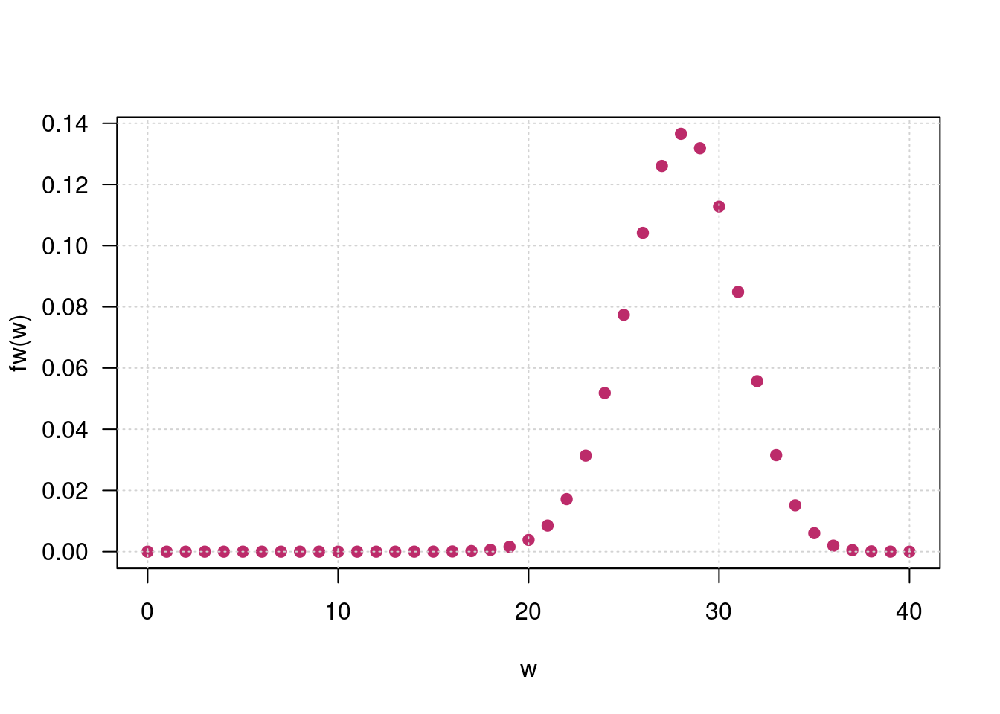

Variable aleatoria
Métodos y Simulación Estadística
Variables discretas
En el caso de las variables discretas la función de distribución de probabilidad \(f(x)\) debe cumplir las siguientes propiedades
\(f(x) = P(X=x) > 0\), la probabilidad es un valor mayor a cero
\(\sum_{R_X} f(x) = 1\), la suma de todas las probabilidades es igual a uno
En este caso se puede utilizar la función sumatoria
sum(x, na.rm = FALSE), donde x es un vector y
na.rm indica si el vector tienen datos faltantes.
Ejemplo
Para la función \(f(x)\)
\[f_{_{X}}(x) = \left \{ \begin{matrix} \displaystyle\binom{40}{x}(0.7)^{x}(0.3)^{40-x} & \mbox{si } x=0,1,2,\ldots,40\\ & \\ 0 & \mbox{en otro caso } \end{matrix}\right. \]
# declaracion de la funcion
fw=function(w){choose(40,w)*0.70^w*0.30^(40-w)}
w=0:40
# grafico de la funcion
plot(w, fw(w), pch=19, col="#BC2B6A", las=1)
grid()
Para verificar que la suma de todas las probabilidades es igual a uno
fw=function(w){choose(40,w)*0.70^w*0.30^(40-w)}
w=0:40
sum(fw(w))[1] 1Para calcular la probabilidad \(P(20 \leq X \leq 30)\)
sum(fw(20:30))[1] 0.8016552Valor esperado
fw=function(w){choose(40,w)*0.70^w*0.30^(40-w)}
w=0:40
Ex=sum(fw(w)*w)
cat("E[X] = ",Ex)E[X] = 28Varianza
fw=function(w){choose(40,w)*0.70^w*0.30^(40-w)}
w=0:40
Ex=sum(fw(w)*w)
Ex2=sum(fw(w)*w^2)
Vx=Ex2-Ex^2
cat("V[X] = ",Vx)V[X] = 8.4Variables continuas
Integración
El concepto de integración se utiliza en probabilidad para determinar el área bajo la curva de una función de densidad \(f(x)\) para una variable aleatoria continua.
Dos de las propiedades de una \(f(x)\) son:
\(\displaystyle\int\limits_{-\infty}^{+\infty} \dfrac{1}{4} f(x) \:dx = 1\)
\(P(a \leq X \leq b) = \displaystyle\int\limits_{a}^{b} f(x) \:dx\)
Estas verificaciones se pueden realizar en R con dos instrucciones:
- Construcción de la función en R
- Realizar la integral : para ello utilizamos la función
integrateque tiene los parámetros,integrate( f, lower, upper)f: la funciónlower: limite inferior . Puede ser un número o-Infupper: limite superior . Puede ser un número o+Inf
integrate(function(x), lower = 0, upper = 1)
Ejemplo
Para la función \(f(x)\)
\[f_{_{X}}(x) = \left \{
\begin{matrix}
\dfrac{1}{4} e^{-x/4} & \mbox{ , } x \geq 0\\
& \\
0 & \mbox{en otro caso }
\end{matrix}\right.
\]
\[P(X < 5)\]
# declaracion de la funcion
fx=function(x){1/4*exp(-x/4)}
# representación gráfica de la función
x=0:20
plot(x,fx(x), type="l", col="#BC2B6A", lwd=5)
# área de integración
x1=seq(0,5,0.01)
f1=fx(x1)
polygon(c(0,x1,5),c(0,f1,0),col="skyblue")
# integral entre 5 y 15 : P( X < 5)
integrate(fx, 0,5)0.7134952 with absolute error < 7.9e-15Valor esperado
\[E(X) =
\displaystyle\int\limits_{-\infty}^{+\infty}x f(x)dx\]
En este caso la función se multiplica por \(x\)
Mx=function(x){1/4*exp(-x/4)*x}
Ex=integrate(Mx, 0, Inf)
cat("E[X] = ", Ex$value,"\n")E[X] = 4 Varianza
\[V[X] = E[X^{2}]-(E[X])^{2} = E[X^{2}]-\mu^{2}\]
fx=function(x){1/4*exp(-x/4)}
Mx1=function(x){1/4*exp(-x/4)*x}
Mx2=function(x){1/4*exp(-x/4)*x^2}
Ex=integrate(Mx1, lower=0,upper=Inf)
Ex2=integrate(Mx2, lower=0,upper=Inf)
cat("V[X] = ", Ex2$value-Ex$value^2)V[X] = 16fx=function(x){1/4*exp(-x/4)}
Mx1=function(x){1/4*exp(-x/4)*x}
Mx2=function(x){1/4*exp(-x/4)*x^2}
Ex=integrate(Mx1, lower=0,upper=Inf)
Ex2=integrate(Mx2, lower=0,upper=Inf)
cat("E[X] = ", Ex$value,"\n")E[X] = 4 cat("V[X] = ", Ex2$value-Ex$value^2)V[X] = 16Caso Discreto-Discreto
Ejemplo
El número de veces que falla una máquina \(X\) con \(R_{X}=\{1,2,3\}\) durante un dia y el número de veces en que el operario requiere llamar al técnico para su arreglo esta dado por \(Y\) con \(R_{Y}=\{1,2,3\}\). Su función de probabilidad conjunta para \(X,Y\) está dada por :
| \(x\) | ||||
|---|---|---|---|---|
| \(f(x,y)\) | 1 | 2 | 3 | |
| \(y\) | 1 | 0.05 | 0.05 | 0.10 |
| 2 | 0.050 | 0.10 | 0.35 | |
| 3 | 0 | 0.20 | 0.10 |
Función de distribución de probabilidad conjunta
fxy=matrix(c(0.05,0.05,0,0.05,0.10,0.20,0.10,0.35,0.10), ncol=3 )
fxy [,1] [,2] [,3]
[1,] 0.05 0.05 0.10
[2,] 0.05 0.10 0.35
[3,] 0.00 0.20 0.10sum(fxy)[1] 1Funciones distribución marginales
fxy=matrix(c(0.05,0.05,0,0.05,0.10,0.20,0.10,0.35,0.10), ncol=3 )
fxy=addmargins(fxy,c(1,2))
colnames(fxy)=c("1","2","3","h(y)")
rownames(fxy)=c("1","2","3","g(x)")
fxy 1 2 3 h(y)
1 0.05 0.05 0.10 0.2
2 0.05 0.10 0.35 0.5
3 0.00 0.20 0.10 0.3
g(x) 0.10 0.35 0.55 1.0Representación gráfica de \(f(x,y)\)
Para construir la gráfica de X y Y debemos crear los vectores
| \(x\) | 1 | 1 | 1 | 2 | 2 | 2 | 3 | 3 | 3 |
| \(y\) | 1 | 2 | 3 | 1 | 2 | 3 | 1 | 2 | 3 |
| \(f(x,y)\) | 0.15 | 0.05 | 0 | 0 | 0.20 | 0.35 | 0 | 0.10 | 0.15 |
x=1:3
y=1:3
x=rep(x,each=3)
y=rep(y,3)
fxy=c(0.15,0.05,0, 0,0.20,0.35, 0,0.10,0.15)
plot3D::scatter3D(x, y, fxy,
colvar = NULL,
col = "blue",
pch = 19, cex = 1.5,
phi = 20, theta = 60,
zlab="f(xy)", xlab="x", ylab="y",
bty = "b2",
col.panel ="steelblue",
col.grid = "darkblue",
add_lines=TRUE)
Funciones de distribución marginal
fxy=matrix(c(0.05,0.05,0,0.05,0.10,0.20,0.10,0.35,0.10), ncol=3 )
fxy=addmargins(fxy,c(1,2))
colnames(fxy)=c("1","2","3","h(y)")
rownames(fxy)=c("1","2","3","g(x)")
fxy 1 2 3 h(y)
1 0.05 0.05 0.10 0.2
2 0.05 0.10 0.35 0.5
3 0.00 0.20 0.10 0.3
g(x) 0.10 0.35 0.55 1.0Covarianza y Correlación
x=c(0,1,2)
y=c(0,1,2)
fxy=matrix(c(0.15,0.05,0,0,0.20,0.35,0,0.10,0.15), ncol=3 )
fxy=addmargins(fxy,c(1,2))
colnames(fxy)=c("1","2","3","h(y)")
rownames(fxy)=c("1","2","3","g(x)")
fxy=as.table(fxy)
gx=fxy[,4]
hy=fxy[4,]
Ex=sum(x*gx)
Ex2=sum(x^2*gx)
Vx=Ex2-(Ex)^2
Ey=sum(y*hy)
Ey2=sum(y^2*hy)
Vy=Ey2-(Ey)^2
x=rep(x,each=3)
y=rep(y,3)
fxy=c(0.15,0.05,0,0,0.20,0.35,0,0.10,0.15)
Exy=sum(x*y*fxy)
CovXY=Exy-Ex*Ey
Rho=CovXY/sqrt(Vx*Vy)E(X) = 1.35 E(X2) = 2.35 V(X) = 0.5275 E(Y) = 1.05 E(Y2) = 1.55 V(Y) = 0.4475 E(XY) = 1.7 Cov(XY) = 0.2825 Rho = 0.5814478
Caso Continuo-continuo
Ejemplo
Una empresa prestadora se servicios a domicilio tienen dos lineas telefónicas para que los clientes puedan realizar sus pedidos. Sea X y Y la proporción del tiempo en que las lineas se encuentran ocupadas. La función de densidad conjunta que modela \(f(x,y)\) esta dada por:
\[f(x,y) = \left \{ \begin{matrix}
\dfrac{3}{2}(x^{2}+y^{2}) & \mbox{ } 0 \leq x \leq 1\\
& \mbox{ } 0 \leq y \leq 1 \\
&\\
0 & \mbox{ en otro caso
}\end{matrix}\right. \]
Inicialmente se verifica la condición :
\(\displaystyle\int_{0}^{1} \displaystyle\int_{0}^{1} \dfrac{3}{2}(x^{2}+y^{2}) \:dx \:dy = 1\)
library(cubature)
fxy <- function(x) { 3/2*(x[1]^2 + x[2]^2)} #
adaptIntegrate(fxy, lowerLimit = c(0, 0), upperLimit = c(1, 1))$integral
[1] 1
$error
[1] 2.220446e-16
$functionEvaluations
[1] 17
$returnCode
[1] 0Ahora su representación gráfica
x=seq(0,1,length=30)
y=seq(0,1,length=30)
fxy=function(x,y){3/2*(x^2+y^2)}
z=outer(x, y, fxy)
persp(x,y,z,theta = 40, phi = 10,expand=0.5, col = "#FF7F00",
xlab = "x", ylab ="y", zlab = "f(x,y)",
main=" ", col.main="blue")